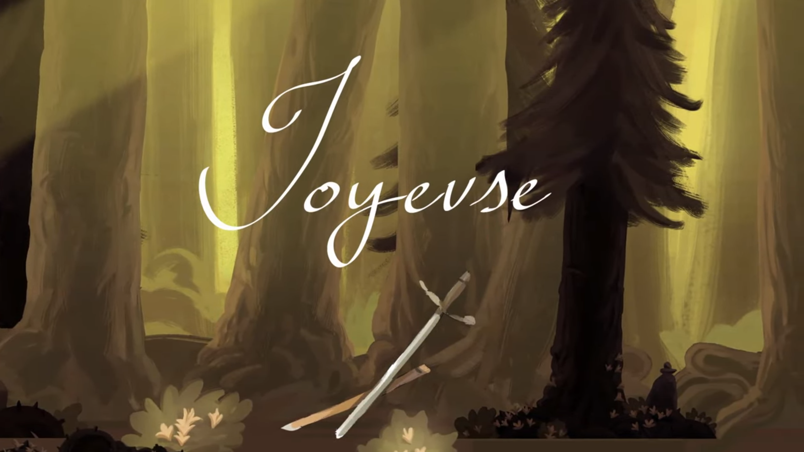

Intro
My name is Leu-yang Eric Huang and I'm a Computer Science(Games) major at the University of Southern California, currently in my Junior year.
My hobbies include art, music, and snowboarding. I mostly do Renaissance style charcoal sketches and oil painting but I've recently gotten into digital art as well. You can find more of my art here. My instruments are the flute I've played over a decade now and passed the Certificate of Merit Advanced with, and the guitar to a lesser extent.
As my major might allude to, my favorite hobby is gaming. I enjoy competitive multiplayer games with high skill ceilings and teamwork, such as Overwatch and World of Warcraft. Currently I play mostly League of Legends (peak rank Diamond 2) and sometimes Hearthstone. I also love a good RPG or strategy game, anything I can get truly invested in emotionally or intellectually.
My latest game is Joyeuse, the adventure of a girl and her magical sword. You can find the zipped Windows executable here. Feel free to download and play!

Work
Professor Yong Chen's Lab (University of Southern California) -
3D Printing Data Analysis
- Studied deformations caused by 3D printing using liquid resin
- Made computer-aided design (CAD) models to be printed and scanned
- Built an automated system to scan parts and gather data for running comparison to CAD model
Professor Kirk Shiung's Lab (University of Southern Califonia) -
Ultrasound Stimulation of Cells
- Used ultrasound to stimulate prostate cancer cells and beta cells
- Analyzed the difference in responses between beningn and malignant cancers when under ultrasound stimulation
- Experimented with inducing insulin production in beta cells using ultrasound
University of Southern California Joint Educational Program -
Instructor
- Taught computer science concepts to underprivileged children in the downtown Los Angeles area
- Worked with a team to plan interactive and productive lessons for our class
- Held weekly meetings to improve future lessons and discuss various social issues affecting the community
Westside Chinese School -
Instructor
- Taught extracurricular classes on Saturdays
- Planned and taught lessons for the art class (1 year) and the chess class (2 years)
Skills
Languages - C/C++, Java, Javascript, HTML, CSS, Python, Assembly
Concepts
- Algorithms - dynamic programming, greedy algorithms, divide and conquer, network flow
- Software - Unity, Git, PhaserJS, OpenGL
- Object oriented design
- Game design and balance
- Data analysis
Education
University of Southern California - B.S. Computer Science (Games), Junior Year
Complete Major Courses
- CSCI 420 - Computer Graphics
- CSCI 356 - Computer Systems
- CSCI 353 - Internetworking
- CTIN 484/489 - Intermediate Game Design
- ITP 485 - Programming Game Engines
- CSCI 270 - Algorithms and Theory of Computing
- CSCI 201 - Principles of Software Development
- CTIN 488 - Game Design Workshop
- ITP 380 - Game Programming
- CSCI 170 - Discrete Methods in Computer Science
- CSCI 104 - Data Structures
- CSCI 109 - Introduction to Computer Science
- CSCI 103 - Introduction to Programming
Contact
Feel free to contact me at leuyangh@usc.edu or 310-779-5882
Projects